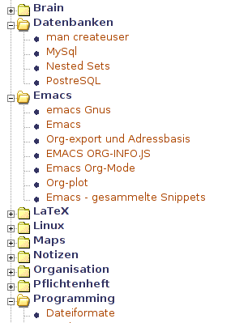

Publishing Treemenus for Org-files
Table of Contents
Introduction
You should be comfortable with publishing Org-mode fiels to HTML already when you read this. Make sure, to create the tree-style sitemap-file on export.
This Tutorial describes a simple technique to include published content into other web applications. I use an external JavaScript treemenu library publish by Marco Pratesi. This treemenu is fast and runs in all Browsers I’m aware of. The techniqe could as well be adopted to other menu libs.
You might as well use the Menu as kind of sitemap or top menu.
- The homepage of Phplaymenu is here: http://sourceforge.net/projects/phplayersmenu/
- A demo can be found on http://phplayersmenu.sourceforge.net/demo.php
Here is a screenshot of a treemenu:

Figure 1: Example phplayersmenu treemenu
Note: Prior to Org-mode commit
4892c8899e5b99d041836749fb2d1458971be55d (version 6.34trans), sitemap-file
auto-sitemap a.s.o. where called index-file, auto-index and similar. I you
have to work with a version released before 25th of February 2010, just
replace sitemap with index throughout this file.
How the menus work
The menus are read from a string of a special structure. While it is beyond this tutorial to explain the usage of the menus in details, the structure of this string is important.
Each line of the string consists of these elements:
[dots]|[text]|[link]|[title]|[icon]|[target]|[expanded]
Everything in brackets is optional. So are any trailing bars, if empty.
The tree structure is represented by prepended dots.
Example:
.|Top level directory without link ..|Article 1|articles/article1.html|||main ..|Article 2|articles/article2.html|||main .|Snippets ..|C++|snippets/c++.html|||main ..|Perl|snippets/Perl.html|||main
will result in either in a tree menu like this here ([F] is an optional
folder icon:
- [F] Top level directory without link | +-- Article 1 `-- Article 2 - [F] Snippets | +-- C++ `-- Perl
…or a menubar like this:
.__________________________________.__________.
| Top level directory without link | Snippets |
`----------------------------------| |
| C++ |
| Perl |
`----------'
Creating the menu structure when publishing
To create the menu structure, I use a modified version of the elisp function
org-publish-org-sitemap, defined in Org-mode/lisp/org-publish.el, that generates
the sitemap for HTML export. The function is called
sr-org-notes-sitemap-complete and defined in one of my emacs setup files.
Fortunately, Org-mode makes it possible to call a function after the
publishing process has fineshed. To make use of sr-org-notes-sitemap-complete,
add this to your publishing project’s definition:
(require 'ox-publish) (setq org-publish-project-alist '(("org-notes" :base-directory "~/org/notes/" ;; ... ;; Important: :auto-sitemap t ; generate sitemap.org automagically :sitemap-filename "sitemap.org" ; this is the default :sitemap-style "tree" ;; Layersmenu: :completion-function sr-org-notes-sitemap-complete :menu/structure-file "~/path/to/menu-structure-file.txt" :menu/link-target "mitte" ;; optional ;; ... )))
Once you re-publish your project, the menu-structure file will be created.
my-org-notes-sitemap-complete
(defun sr-org-notes-sitemap-complete () "Take the sitemap-file and turn it into the menu-structure file for Marco Pratesi's phplayersmenu." (let* ((base-dir (file-name-as-directory (plist-get project-plist :base-directory))) (orig (expand-file-name (concat base-dir (plist-get project-plist :sitemap-filename)))) (strip-suffix (or (plist-get project-plist :base-extension) "org")) (add-suffix (or (plist-get project-plist :html-extension) "html")) (link-target (or (plist-get project-plist :menu/link-target) "_blank")) (menu-file (or (plist-get project-plist :menu/structure-file) nil)) (visiting (find-buffer-visiting orig)) (visiting-output (find-buffer-visiting menu-file)) (input-buffer (find-file orig)) (output-buffer (find-file menu-file)) (old-ndots 1) (sub "") (old-sub "")) (unless menu-file (throw 'sr-org-note-kb-completion-error "No menu structure file provided. Giving up.")) (with-current-buffer output-buffer (erase-buffer)) (with-current-buffer input-buffer (widen) (goto-char (point-min)) (while (re-search-forward org-bracket-link-analytic-regexp (point-max) t) (let ((link (match-string-no-properties 3)) (text (match-string-no-properties 5)) (pos 0) (ndots 1)) (with-current-buffer output-buffer (if (string-match (concat "\\(" strip-suffix "\\)$") link) (setq link (replace-match add-suffix t t link))) (while (setq pos (string-match "/" link pos)) (setq ndots (+ ndots 1)) (setq pos (+ pos 1))) (when (< 1 ndots) (string-match "\\(/[^/]*\\)$" link) (setq sub (replace-match "" t t link)) (unless (string= sub old-sub) (let ((ds 0) (subs (split-string sub "/")) (old-subs (split-string old-sub "/"))) (while (string= (car old-subs) (car subs)) (setq ds (+ ds 1)) (pop old-subs) (pop subs)) (dolist (d subs) (setq ds (+ ds 1)) (insert (concat (make-string ds ?.) "|" d "\n"))) (setq old-sub sub)))) (insert (concat (make-string ndots ?.) "|" text "|" link "|||" link-target "\n")) (setq old-ndots ndots) )))) (or visiting (kill-buffer input-buffer)) (with-current-buffer output-buffer (save-buffer)) (or visiting-output (kill-buffer output-buffer)) ))
Include the menu in existing pages
To actually use the result, download the Phplayersmenu library and unpack it. Move the following subfolders to your webroot:
phplayersmenu-3.2.0/lib/phplayersmenu-3.2.0/libjs/phplayersmenu-3.2.0/menuimages/
Also choose one of the stylesheets in phplayersmenu-3.2.0/. In the example
below, the layerstreemenu.css is used.
Adjust the file(s) you want to include the menu in. Here is an example:
1: <html> 2: <head> 3: <script type="text/javascript"> 4: <?php include ("libjs/layersmenu-browser_detection.js"); ?> 5: </script> 6: <link rel="stylesheet" href="layerstreemenu.css" type="text/css"></link> 7: <script type="text/javascript" src="libjs/layerstreemenu-cookies.js"></script> 8: </head> 9: <body> 10: 11: ... 12: 13: <div> 14: <?php 15: include ("lib/PHPLIB.php"); // taken from PHPLib 16: include ("lib/layersmenu-common.inc.php"); 17: include ("lib/treemenu.inc.php"); 18: if ( @ is_file ("../intranet/navigations/org.txt") ) 19: { 20: $mid = new TreeMenu(); 21: $mid->setMenuStructureFile("navigations/org.txt"); 22: $mid->setPrependedUrl("../org-notes/"); 23: $mid->parseStructureForMenu("treemenu1"); 24: print $mid->newTreeMenu("treemenu1"); 25: } 26: ?> 27: </div> 28: </body> 29: </html>
What makes your menu a tree-menu, are
- the stylesheet (line 6),
- theinclusion of treemenu.inc.php (in line 17),
- the constructor used (line 20),
- and the
newTreeMenu()method (called in line 24).
The (optional) URL provided in line 22 is prepended to all the URLs found in the menu-structure file.
See the Phplayersmenu docs on how to create horizontal and vertical menus from the same structure file.